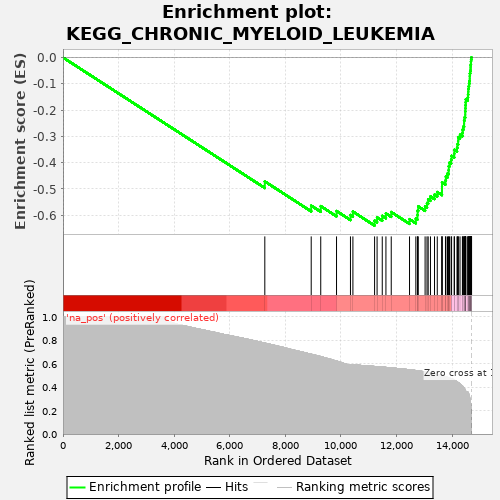
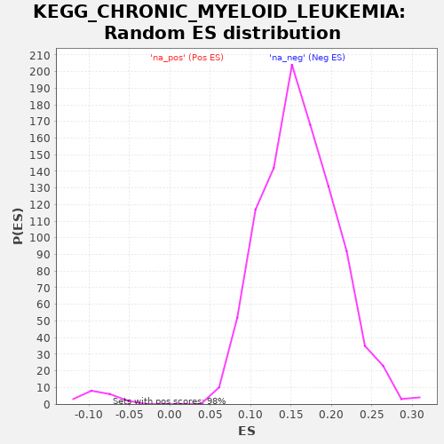

| | | Dataset | drug_embeddings_gsea |
| Phenotype | NoPhenotypeAvailable |
| Upregulated in class | na_neg |
| GeneSet | KEGG_CHRONIC_MYELOID_LEUKEMIA |
| Enrichment Score (ES) | -0.6393308 |
| Normalized Enrichment Score (NES) | -7.2609887 |
| Nominal p-value | 0.0 |
| FDR q-value | 0.0 |
| FWER p-Value | 0.0 |
Table: GSEA Results Summary

Fig 1: Enrichment plot: KEGG_CHRONIC_MYELOID_LEUKEMIA
Profile of the Running ES Score & Positions of GeneSet Members on the Rank Ordered List
| PROBE | GENE SYMBOL | GENE_TITLE | RANK IN GENE LIST | RANK METRIC SCORE | RUNNING ES | CORE ENRICHMENT | | 1 | PIK3R5 | | | 7260 | 0.776 | -0.4713 | No |
| 2 | SHC4 | | | 8929 | 0.681 | -0.5633 | No |
| 3 | CTBP2 | | | 9272 | 0.660 | -0.5654 | No |
| 4 | SOS2 | | | 9840 | 0.622 | -0.5841 | No |
| 5 | E2F2 | | | 10341 | 0.591 | -0.5992 | No |
| 6 | CBLC | | | 10429 | 0.589 | -0.5861 | No |
| 7 | AKT3 | | | 11209 | 0.576 | -0.6207 | Yes |
| 8 | PIK3CD | | | 11299 | 0.574 | -0.6083 | Yes |
| 9 | GAB2 | | | 11485 | 0.571 | -0.6024 | Yes |
| 10 | PIK3CG | | | 11617 | 0.568 | -0.5931 | Yes |
| 11 | PIK3CB | | | 11808 | 0.564 | -0.5878 | Yes |
| 12 | SOS1 | | | 12466 | 0.549 | -0.6150 | Yes |
| 13 | NRAS | | | 12693 | 0.541 | -0.6130 | Yes |
| 14 | TGFB3 | | | 12751 | 0.540 | -0.5994 | Yes |
| 15 | MECOM | | | 12757 | 0.540 | -0.5824 | Yes |
| 16 | TGFB2 | | | 12780 | 0.539 | -0.5665 | Yes |
| 17 | SHC2 | | | 13026 | 0.529 | -0.5661 | Yes |
| 18 | RUNX1 | | | 13095 | 0.527 | -0.5538 | Yes |
| 19 | ARAF | | | 13137 | 0.525 | -0.5396 | Yes |
| 20 | BCR | | | 13219 | 0.521 | -0.5283 | Yes |
| 21 | E2F3 | | | 13365 | 0.515 | -0.5216 | Yes |
| 22 | SHC3 | | | 13464 | 0.509 | -0.5119 | Yes |
| 23 | CBLB | | | 13633 | 0.498 | -0.5073 | Yes |
| 24 | MAP2K2 | | | 13634 | 0.498 | -0.4912 | Yes |
| 25 | PIK3CA | | | 13636 | 0.498 | -0.4752 | Yes |
| 26 | CTBP1 | | | 13759 | 0.489 | -0.4677 | Yes |
| 27 | TGFBR1 | | | 13774 | 0.488 | -0.4529 | Yes |
| 28 | STAT5B | | | 13832 | 0.483 | -0.4412 | Yes |
| 29 | AKT2 | | | 13873 | 0.480 | -0.4284 | Yes |
| 30 | TGFB1 | | | 13878 | 0.480 | -0.4132 | Yes |
| 31 | TGFBR2 | | | 13905 | 0.477 | -0.3996 | Yes |
| 32 | PIK3R3 | | | 13963 | 0.471 | -0.3883 | Yes |
| 33 | PIK3R2 | | | 13979 | 0.469 | -0.3742 | Yes |
| 34 | BRAF | | | 14075 | 0.460 | -0.3658 | Yes |
| 35 | CDKN1B | | | 14079 | 0.459 | -0.3512 | Yes |
| 36 | HRAS | | | 14175 | 0.445 | -0.3433 | Yes |
| 37 | NFKBIA | | | 14190 | 0.442 | -0.3300 | Yes |
| 38 | CCND1 | | | 14216 | 0.438 | -0.3175 | Yes |
| 39 | BAD | | | 14218 | 0.438 | -0.3035 | Yes |
| 40 | CHUK | | | 14282 | 0.426 | -0.2940 | Yes |
| 41 | CDK4 | | | 14368 | 0.408 | -0.2866 | Yes |
| 42 | STAT5A | | | 14377 | 0.407 | -0.2740 | Yes |
| 43 | IKBKB | | | 14402 | 0.399 | -0.2628 | Yes |
| 44 | KRAS | | | 14429 | 0.393 | -0.2519 | Yes |
| 45 | IKBKG | | | 14430 | 0.392 | -0.2392 | Yes |
| 46 | CRKL | | | 14446 | 0.386 | -0.2278 | Yes |
| 47 | SHC1 | | | 14470 | 0.375 | -0.2172 | Yes |
| 48 | CDK6 | | | 14471 | 0.374 | -0.2052 | Yes |
| 49 | MAPK3 | | | 14476 | 0.370 | -0.1935 | Yes |
| 50 | HDAC2 | | | 14480 | 0.369 | -0.1818 | Yes |
| 51 | PIK3R1 | | | 14486 | 0.366 | -0.1703 | Yes |
| 52 | SMAD4 | | | 14491 | 0.362 | -0.1589 | Yes |
| 53 | RAF1 | | | 14562 | 0.357 | -0.1521 | Yes |
| 54 | CDKN2A | | | 14571 | 0.354 | -0.1412 | Yes |
| 55 | MAP2K1 | | | 14579 | 0.351 | -0.1304 | Yes |
| 56 | CRK | | | 14581 | 0.349 | -0.1192 | Yes |
| 57 | PTPN11 | | | 14596 | 0.342 | -0.1091 | Yes |
| 58 | CDKN1A | | | 14608 | 0.333 | -0.0991 | Yes |
| 59 | NFKB1 | | | 14621 | 0.322 | -0.0895 | Yes |
| 60 | CBL | | | 14633 | 0.306 | -0.0804 | Yes |
| 61 | ABL1 | | | 14634 | 0.306 | -0.0705 | Yes |
| 62 | BCL2L1 | | | 14637 | 0.305 | -0.0608 | Yes |
| 63 | SMAD3 | | | 14649 | 0.292 | -0.0521 | Yes |
| 64 | HDAC1 | | | 14662 | 0.261 | -0.0445 | Yes |
| 65 | RB1 | | | 14664 | 0.257 | -0.0362 | Yes |
| 66 | MAPK1 | | | 14666 | 0.254 | -0.0281 | Yes |
| 67 | RELA | | | 14675 | 0.231 | -0.0212 | Yes |
| 68 | AKT1 | | | 14676 | 0.227 | -0.0139 | Yes |
| 69 | GRB2 | | | 14682 | 0.197 | -0.0078 | Yes |
| 70 | MDM2 | | | 14691 | 0.136 | -0.0040 | Yes |
| 71 | MYC | | | 14692 | 0.134 | 0.0003 | Yes |
| 72 | TP53 | | | 14698 | 0.000 | -0.0000 | Yes |
Table: GSEA details [plain text format]

Fig 2: KEGG_CHRONIC_MYELOID_LEUKEMIA: Random ES distribution
Gene set null distribution of ES for KEGG_CHRONIC_MYELOID_LEUKEMIA